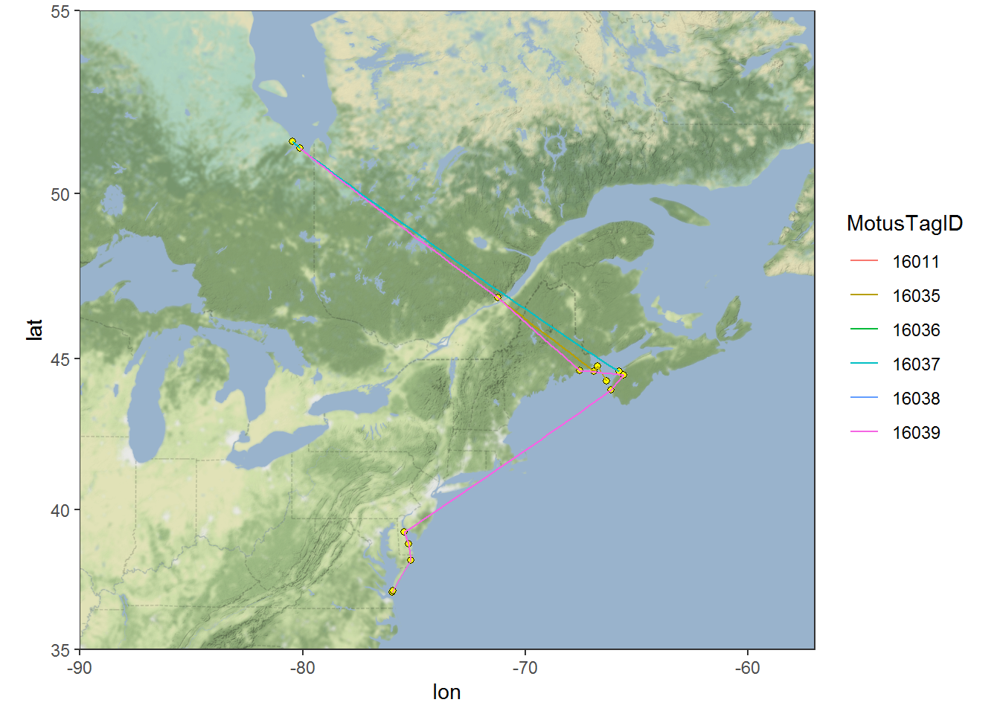
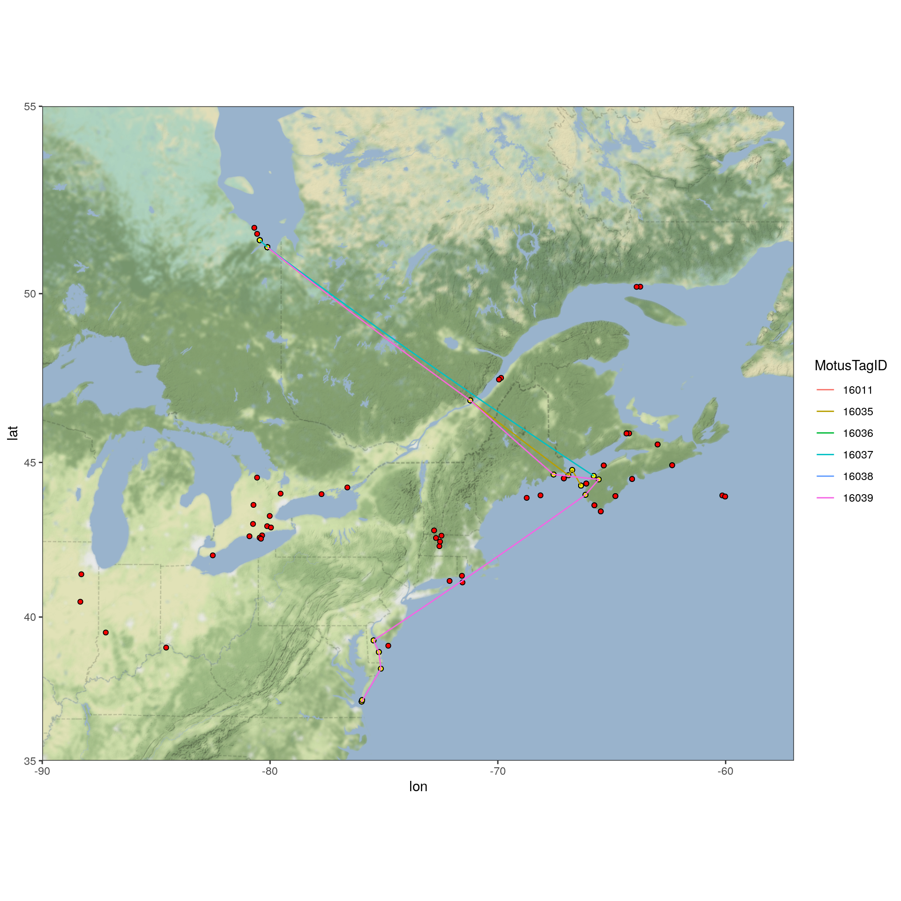

6 Exploring data with the Motus R package
This chapter was contributed by Tara L. Crewe, Zoe Crysler, and Philip Taylor.
Once you have clarified any possible ambiguous tags, and removed false positives, you are ready to start analyzing your clean data set. This chapter will walk you through some simple procedures to start working with and visualizing the clean sample data set; you can modify these scripts to work with your own data. For a more in-depth R tutorial we strongly recommend working through R for Data Science by Garrett Grolemund and Hadley Wickham (http://r4ds.had.co.nz/).
6.1 Load required packages
Follow the instructions in Chapter 2 to install the following packages before loading, if you haven’t already done so.
6.2 Load data
If you followed along with the the previous Chapter (Chapter 5) and are working with the cleaned df.alltags.sub file, you can skip this step and move to section 6.3.
Otherwise, if you saved your data as an RDS file, you can load it using:
Or, if you’ve applied a custom filter to your .motus file, you can load the previously downloaded sample motus data (see Chapter 3) and clean it now. Currently the main benefit of using the custom filter is that you apply the filter to the .motus file, which allows you more flexibility in applying dplyr functions to manage and filter the data (e.g., you can select different variables to include in the data than we included in the RDS file in Chapter 5). This approach also allows you to more readily integrate new data added to your database with the tagme function. Because we are selecting the same variables and filtering the same records, the following gives you the same dataset as the readRDS statement above:
# load the .motus file (remember 'motus.sample' is both username and password)
proj.num <- 176
sql.motus <- tagme(proj.num, update = TRUE, dir = "./data/")
tbl.alltags <- tbl(sql.motus, "alltagsGPS")
# obtain a table object of the filter
tbl.filter <- getRunsFilters(sql.motus, "filtAmbigFalsePos")
# filter and convert the table into a dataframe, with a few modications
df.alltags.sub <- left_join(tbl.alltags, tbl.filter, by = c("runID", "motusTagID")) %>%
mutate(probability = ifelse(is.na(probability), 1, probability),
recvLat = if_else((is.na(gpsLat)|gpsLat == 0|gpsLat == 999),
recvDeployLat,
gpsLat),
recvLon = if_else((is.na(gpsLon)|gpsLon == 0|gpsLon == 999),
recvDeployLon,
gpsLon),
recvAlt = if_else(is.na(gpsAlt),
recvDeployAlt,
gpsAlt)) %>%
filter(probability > 0) %>%
select(-noise, -slop, -burstSlop, -done, -bootnum, -codeSet,
-mfg, -nomFreq, -markerNumber, -markerType, -tagDepComments,
-fullID, -deviceID, -recvDeployLat, -recvDeployLon, -recvDeployAlt,
-speciesGroup, -gpsLat, -gpsLon, -recvAlt, -recvSiteName) %>%
collect() %>%
as.data.frame() %>%
mutate(ts = as_datetime(ts), # work with dates AFTER transforming to flat file
tagDeployStart = as_datetime(tagDeployStart),
tagDeployEnd = as_datetime(tagDeployEnd),
recvDeployName = if_else(is.na(recvDeployName),
paste(recvLat, recvLon, sep=":"),
recvDeployName))Note that if your project is very large, you may want to convert only a portion of it to the dataframe, to avoid memory issues. Details on filtering the tbl prior to collecting as a dataframe are available in section 3.5.7.
Here we do so by adding a filter to the above command, in this case, only creating a dataframe for motusTagID 16047, but you can decide how to best subset your data based on your need (e.g. by species or year):
6.3 Summarizing your data
Here we will run through some basic commands, starting with the summary() function to view a selection of variables in a data frame:
sql.motus %>%
tbl("alltags") %>%
select(ts, motusTagID, runLen, speciesEN, tagDepLat, tagDepLon,
recvDeployLat, recvDeployLon) %>%
collect() %>%
summary()## ts motusTagID runLen speciesEN tagDepLat
## Min. :1.438e+09 Min. :10811 Min. : 2.0 Length:108826 Min. :11.12
## 1st Qu.:1.476e+09 1st Qu.:22897 1st Qu.: 30.0 Class :character 1st Qu.:50.19
## Median :1.477e+09 Median :22905 Median : 122.0 Mode :character Median :50.19
## Mean :1.476e+09 Mean :22660 Mean : 355.9 Mean :50.14
## 3rd Qu.:1.477e+09 3rd Qu.:23316 3rd Qu.: 404.0 3rd Qu.:50.19
## Max. :1.498e+09 Max. :24303 Max. :2474.0 Max. :51.80
## NA's :2025
## tagDepLon recvDeployLat recvDeployLon
## Min. :-80.69 Min. :-42.50 Min. :-143.68
## 1st Qu.:-63.75 1st Qu.: 50.20 1st Qu.: -63.75
## Median :-63.75 Median : 50.20 Median : -63.75
## Mean :-65.77 Mean : 49.05 Mean : -65.64
## 3rd Qu.:-63.75 3rd Qu.: 50.20 3rd Qu.: -63.75
## Max. :-63.75 Max. : 62.89 Max. : -60.02
## NA's :2025 NA's :173 NA's :173# same summary for the filtered sql data
df.alltags.sub %>%
select(ts, motusTagID, runLen, speciesEN, tagDepLat, tagDepLon,
recvLat, recvLon) %>%
summary()## ts motusTagID runLen speciesEN tagDepLat
## Min. :2015-08-03 06:37:11 Min. :16011 Min. : 4.0 Length:48133 Min. :50.19
## 1st Qu.:2016-10-06 19:17:36 1st Qu.:22897 1st Qu.: 27.0 Class :character 1st Qu.:50.19
## Median :2016-10-09 21:48:11 Median :22897 Median : 97.0 Mode :character Median :50.19
## Mean :2016-09-05 10:37:42 Mean :22267 Mean : 235.1 Mean :50.34
## 3rd Qu.:2016-10-19 10:37:42 3rd Qu.:22897 3rd Qu.: 287.0 3rd Qu.:50.19
## Max. :2017-04-20 22:33:19 Max. :23316 Max. :1371.0 Max. :51.80
##
## tagDepLon recvLat recvLon
## Min. :-80.69 Min. :37.10 Min. :-80.69
## 1st Qu.:-63.75 1st Qu.:50.20 1st Qu.:-63.75
## Median :-63.75 Median :50.20 Median :-63.75
## Mean :-65.56 Mean :50.05 Mean :-65.26
## 3rd Qu.:-63.75 3rd Qu.:50.20 3rd Qu.:-63.75
## Max. :-63.75 Max. :51.82 Max. :-62.99
## NA's :164 NA's :164The dplyr package allows you to easily summarize data by group, manipulate variables, or create new variables based on your data.
We can manipulate existing variables or create new ones with dplyr’s mutate() function, here we’ll convert ts to a POSIXct format, then make a new variable for year and day of year (doy).
We’ll also remove the set of points with missing receiver latitude and longitudes. These may be useful in some contexts (for example if the approximate location of the receiver is known) but can cause warnings or errors when plotting.
df.alltags.sub <- df.alltags.sub %>%
mutate(ts = as_datetime(ts, tz = "UTC"), # convert ts to POSIXct format
year = year(ts), # extract year from ts
doy = yday(ts)) %>% # extract numeric day of year from ts
filter(!is.na(recvLat))
head(df.alltags.sub)## hitID runID batchID ts tsCorrected sig sigsd freq freqsd motusTagID ambigID port
## 1 45107 8886 53 2015-10-26 11:19:49 1445858390 52 0 4 0 16047 NA 3
## 2 45108 8886 53 2015-10-26 11:20:28 1445858429 54 0 4 0 16047 NA 3
## 3 45109 8886 53 2015-10-26 11:21:17 1445858477 55 0 4 0 16047 NA 3
## 4 45110 8886 53 2015-10-26 11:21:55 1445858516 52 0 4 0 16047 NA 3
## 5 45111 8886 53 2015-10-26 11:22:44 1445858564 49 0 4 0 16047 NA 3
## 6 199885 23305 64 2015-10-26 11:12:04 1445857924 33 0 4 0 16047 NA 1
## runLen tagProjID mfgID tagType tagModel tagLifespan tagBI pulseLen tagDeployID speciesID
## 1 5 176 378 ID NTQB-3-2 NA 9.6971 2.5 1839 4670
## 2 5 176 378 ID NTQB-3-2 NA 9.6971 2.5 1839 4670
## 3 5 176 378 ID NTQB-3-2 NA 9.6971 2.5 1839 4670
## 4 5 176 378 ID NTQB-3-2 NA 9.6971 2.5 1839 4670
## 5 5 176 378 ID NTQB-3-2 NA 9.6971 2.5 1839 4670
## 6 11 176 378 ID NTQB-3-2 NA 9.6971 2.5 1839 4670
## tagDeployStart tagDeployEnd tagDepLat tagDepLon tagDepAlt recvDeployID recv
## 1 2015-09-10 18:00:00 2016-03-10 18:00:00 51.4839 -80.45 NA 2510 Lotek-159
## 2 2015-09-10 18:00:00 2016-03-10 18:00:00 51.4839 -80.45 NA 2510 Lotek-159
## 3 2015-09-10 18:00:00 2016-03-10 18:00:00 51.4839 -80.45 NA 2510 Lotek-159
## 4 2015-09-10 18:00:00 2016-03-10 18:00:00 51.4839 -80.45 NA 2510 Lotek-159
## 5 2015-09-10 18:00:00 2016-03-10 18:00:00 51.4839 -80.45 NA 2510 Lotek-159
## 6 2015-09-10 18:00:00 2016-03-10 18:00:00 51.4839 -80.45 NA 2512 Lotek-164
## recvDeployName isRecvMobile recvProjID recvUtcOffset antType antBearing antHeight speciesEN
## 1 Shelburne 0 74 NA yagi-9 127 NA Red Knot
## 2 Shelburne 0 74 NA yagi-9 127 NA Red Knot
## 3 Shelburne 0 74 NA yagi-9 127 NA Red Knot
## 4 Shelburne 0 74 NA yagi-9 127 NA Red Knot
## 5 Shelburne 0 74 NA yagi-9 127 NA Red Knot
## 6 BennettMeadow 0 74 NA yagi-9 243 NA Red Knot
## speciesFR speciesSci tagProjName recvProjName gpsAlt filterID probability recvLat
## 1 Bécasseau maubèche Calidris canutus SampleData <NA> NA NA 1 42.60699
## 2 Bécasseau maubèche Calidris canutus SampleData <NA> NA NA 1 42.60699
## 3 Bécasseau maubèche Calidris canutus SampleData <NA> NA NA 1 42.60699
## 4 Bécasseau maubèche Calidris canutus SampleData <NA> NA NA 1 42.60699
## 5 Bécasseau maubèche Calidris canutus SampleData <NA> NA NA 1 42.60699
## 6 Bécasseau maubèche Calidris canutus SampleData <NA> NA NA 1 42.68067
## recvLon year doy
## 1 -72.71657 2015 299
## 2 -72.71657 2015 299
## 3 -72.71657 2015 299
## 4 -72.71657 2015 299
## 5 -72.71657 2015 299
## 6 -72.47392 2015 299We can also summarize information by group, in this case motusTagID, and apply various functions to these groups such as getting the total number of detections (n) for each tag, the number of receivers each tag was detected on, the first and last detection date, and the total number of days there was at least one detection:
tagSummary <- df.alltags.sub %>%
group_by(motusTagID) %>%
summarize(nDet = n(),
nRecv = length(unique(recvDeployName)),
tsMin = min(ts),
tsMax = max(ts),
totDay = length(unique(doy)))
head(tagSummary)## # A tibble: 6 x 6
## motusTagID nDet nRecv tsMin tsMax totDay
## <int> <int> <int> <dttm> <dttm> <int>
## 1 16011 116 1 2015-08-03 06:37:11 2015-08-05 20:41:12 3
## 2 16035 415 5 2015-08-14 17:53:49 2015-09-02 14:06:09 6
## 3 16036 62 1 2015-08-17 21:56:44 2015-08-17 21:58:52 1
## 4 16037 1278 3 2015-08-23 15:13:57 2015-09-08 18:37:16 14
## 5 16038 70 1 2015-08-20 18:42:33 2015-08-22 22:19:37 3
## 6 16039 1044 10 2015-08-23 02:28:45 2015-09-19 06:08:31 8We can also group by multiple variables; applying the same function as above but now grouping by motusTagID and recvDeployName, we will get information for each tag detected on each receiver. Since we are grouping by recvDeployName, there will be by default only one recvDeployName in each group, thus the variable nRecv will be 1 for each row. This in not very informative, however we include this to help illustrate how grouping works:
tagRecvSummary <- df.alltags.sub %>%
group_by(motusTagID, recvDeployName) %>%
summarize(nDet = n(),
nRecv = length(unique(recvDeployName)),
tsMin = min(ts),
tsMax = max(ts),
totDay = length(unique(doy)))
head(tagRecvSummary)## # A tibble: 6 x 7
## # Groups: motusTagID [2]
## motusTagID recvDeployName nDet nRecv tsMin tsMax totDay
## <int> <chr> <int> <int> <dttm> <dttm> <int>
## 1 16011 North Bluff 116 1 2015-08-03 06:37:11 2015-08-05 20:41:12 3
## 2 16035 Brier2 38 1 2015-09-02 14:03:19 2015-09-02 14:06:09 1
## 3 16035 D'Estimauville 32 1 2015-09-02 07:58:43 2015-09-02 08:04:24 1
## 4 16035 Netitishi 274 1 2015-08-14 17:53:49 2015-09-01 21:35:32 5
## 5 16035 Southwest Head 65 1 2015-09-02 13:06:13 2015-09-02 13:14:39 1
## 6 16035 Swallowtail 6 1 2015-09-02 13:21:27 2015-09-02 13:22:22 16.4 Plotting your data
Plotting your data is a powerful way to visualize broad and fine-scale detection patterns. This section will give you a brief introduction to plotting using ggplot2. For more in depth information on the uses of ggplot2, we recommend the Cookbook for R, and the Rstudio ggplot2 cheatsheet.
To make coarse-scale plots with large files, we suggest first rounding the detection time to the nearest hour or day so that processing time is faster. Here we round detection times to the nearest hour, then make a basic plot of hourly detections by motusTagID:
df.alltags.sub.2 <- df.alltags.sub %>%
mutate(hour = as.POSIXct(round(ts, "hour"))) %>%
select(motusTagID, port, tagDeployStart, tagDepLat, tagDepLon,
recvLat, recvLon, recvDeployName, antBearing, speciesEN, year, doy, hour) %>%
distinct()
ggplot(data = df.alltags.sub.2, aes(x = hour, y = as.factor(motusTagID))) +
theme_bw() +
geom_point() +
labs(x = "Time (rounded to hour)", y = "MotusTagID") Let’s focus only on tags deployed in 2016, and we can colour the tags by species:
Let’s focus only on tags deployed in 2016, and we can colour the tags by species:
ggplot(data = filter(df.alltags.sub.2, year(tagDeployStart) == 2016),
aes(x = hour, y = as.factor(motusTagID), colour = speciesEN)) +
theme_bw() +
geom_point() +
labs(x = "Time (rounded to hour)", y = "MotusTagID") +
scale_colour_discrete(name = "Species") We can see how tags moved latitudinally by first ordering by hour, and colouring by
We can see how tags moved latitudinally by first ordering by hour, and colouring by motusTagID:
df.alltags.sub.2 <- arrange(df.alltags.sub.2, hour)
ggplot(data = filter(df.alltags.sub.2, year(tagDeployStart) == 2016),
aes(x = hour, y = recvLat, col = as.factor(motusTagID),
group = as.factor(motusTagID))) +
theme_bw() +
geom_point() +
geom_path() +
labs(x = "Time (rounded to hour)", y = "Receiver latitude") +
scale_colour_discrete(name = "MotusTagID") Now lets look at more detailed plots of signal variation. We use the full
Now lets look at more detailed plots of signal variation. We use the full df.alltags.sub dataframe so that we can get signal strength for each detection of a specific tag. Let’s examine fall 2016 detections of tag 22897 at Niapiskau; we facet the plot by deployment name, ordered by decreasing latitude:
ggplot(data = filter(df.alltags.sub,
motusTagID == 22897,
recvDeployName == "Niapiskau"),
aes(x = ts, y = sig)) +
theme_bw() +
geom_point() +
labs(x = "Time", y = "Signal strength") +
facet_grid(recvDeployName ~ .)
We use the sunRiseSet() function available in the motus R package (see C.2) to get sunrise and sunset times for all detections. We then zoom in on a certain timeframe and add that information to the above plot by adding a geom_vline() statement to the code, which adds a yellow line for sunrise time, and a blue line for sunset time:
# add sunrise and sunset times to the dataframe
df.alltags.sub <- sunRiseSet(df.alltags.sub, lat = "recvLat", lon = "recvLon")
ggplot(data = filter(df.alltags.sub, motusTagID == 22897,
ts > ymd("2016-10-11"),
ts < ymd("2016-10-17"),
recvDeployName == "Niapiskau"),
aes(x = ts, y = sig)) +
theme_bw() +
geom_point() +
labs(x = "Time of year", y = "Signal strength") +
geom_vline(aes(xintercept = sunrise), col = "orange") +
geom_vline(aes(xintercept = sunset), col = "blue") We can see that during this period, the tag was most often detected during the day, suggesting it may be actively foraging in this area during this time.
We can see that during this period, the tag was most often detected during the day, suggesting it may be actively foraging in this area during this time.
The same plots can provide valuable movement information when the receivers are ordered geographically. We do this for motusTagID 16039:
# We'll first order sitelat by latitude (for plots)
df.alltags.sub <- mutate(df.alltags.sub,
recvDeployName = reorder(recvDeployName, recvLat))
ggplot(data = filter(df.alltags.sub,
motusTagID == 16039,
ts < ymd("2015-10-01")),
aes(x = ts, y = recvDeployName)) +
theme_bw() +
geom_point() +
labs(x = "Time of year", y = "Receiver name (ordered by latitude)")
We zoom in on a section of this plot and look at antenna bearings to see directional movement past stations:
ggplot(data = filter(df.alltags.sub, motusTagID == 16039,
ts > ymd("2015-09-14"),
ts < ymd("2015-10-01")),
aes(x = ts, y = sig, col = as.factor(antBearing))) +
theme_bw() +
geom_point() +
labs(x = "Time of day", y = "Signal strength") +
scale_color_discrete(name = "Antenna bearing") +
facet_grid(recvDeployName ~ .)
This plot shows the typical flyby pattern of a migrating animal, with signal strength increasing and then decreasing as the tag moves through the beams of the antennas.
6.5 Mapping your data
To generate maps of tag paths, we will once again use summarized data so we can work with a much smaller database for faster processing. Here we’ll summarize detections by day. As we did in Chapter 5, we create a simple function to summarize the data, since we will likely want to do this type of summary over and over again.
# Simplify the data by summarizing by the runID
# If you want to summarize at a finer (or coarser) scale, you can also create
# other groups. The simplest alternative is a rounded timestamp variable; for
# example by using mutate(ts.h = plyr::round_any(ts, 3600) function call. Other
# options are to just use date (e.g date = as_date(ts))
fun.getpath <- function(df) {
df %>%
filter(tagProjID == proj.num, # keep only tags registered to the sample project
!is.na(recvLat) | !(recvLat == 0)) %>%
group_by(motusTagID, runID, recvDeployName, ambigID,
tagDepLon, tagDepLat, recvLat, recvLon) %>%
summarize(max.runLen = max(runLen), ts.h = mean(ts)) %>%
arrange(motusTagID, ts.h) %>%
data.frame()
} # end of function call
df.alltags.path <- fun.getpath(df.alltags.sub)df.alltags.sub.path <- df.alltags.sub %>%
filter(tagProjID == proj.num) %>% # only tags registered to project
arrange(motusTagID, ts) %>% # order by time stamp for each tag
mutate(date = as_date(ts)) %>% # create date variable
group_by(motusTagID, date, recvDeployName, ambigID,
tagDepLon, tagDepLat, recvLat, recvLon)
df.alltags.path <- fun.getpath(df.alltags.sub.path)6.5.1 Mapping with the ggmap package
Mapping with ggmap can be a fast way to view flight paths and allows you to select from multiple base layers.
There are several ways to use the ggmap package. One is with Google Maps, which, as of October 16, 2018, requires a Google Maps API key (see Appendix B section B.3 for more details). An alternative method is to use an open source of map tiles, such as Stamen Map tiles, which do not require an API key. The following example uses Stamen Map tiles.
The first step is to create a map with a specified map are, maptype (“terrain”, “toner”, or “watercolor”, among others), and level of zoom (integer for zoom 3-21, 3 being continent level, 10 being city-scale. For stamen maps this represents the level of detail you want). We then add points for receivers and lines connecting consecutive detections by motusTagID. We can also add points for all receivers that were active during a certain time period if we have already downloaded all metadata.
gmap <- get_stamenmap(bbox = c(left = -90, right = -57, bottom = 35, top = 55),
maptype = "terrain-background", # select maptype
zoom = 6) # zoom, must be a whole number
# just use the tags that we have examined carefully and filtered (in the
# previous chapter)
df.tmp <- df.alltags.path %>%
filter(motusTagID %in% c(16011, 16035, 16036, 16037, 16038, 16039)) %>%
arrange(ts.h) %>% # arange by hour
as.data.frame()
ggmap(gmap) +
theme_bw() +
geom_point(data = df.tmp, aes(x = recvLon, y = recvLat),
shape = 21, colour = "black", fill = "yellow") +
geom_path(data = df.tmp,
aes(x = recvLon, y = recvLat, group = motusTagID, col = as.factor(motusTagID))) +
scale_color_discrete(name = "MotusTagID")
We make the same plot, with additional points for all receivers that were active during a specified time (concentrating on our area of interest):
# get receiver metadata
tbl.recvDeps <- tbl(sql.motus, "recvDeps")
df.recvDeps <- tbl.recvDeps %>%
collect() %>%
as.data.frame() %>%
mutate(tsStart = as_datetime(tsStart, tz = "UTC", origin = "1970-01-01"),
tsEnd = as_datetime(tsEnd, tz = "UTC", origin = "1970-01-01"),
# for deployments with no end dates, make an end date a year from now
tsEnd = if_else(is.na(tsEnd),
as.POSIXct(format(Sys.time(), "%Y-%m-%d %H:%M:%S")) +
dyears(1),
tsEnd),
tsEnd = as.POSIXct(tsEnd, tz = "UTC", origin = "1970-01-01"))
# get running intervals for all receiver deployments
siteOp <- with(df.recvDeps, interval(tsStart, tsEnd))
# set the date range you're interested in
dateRange <- interval(as.POSIXct("2015-08-01"), as.POSIXct("2016-01-01"))
# create new variable "active" which will be set to TRUE if the receiver was
# active at some point during your specified date range, and FALSE if not
df.recvDeps$active <- int_overlaps(siteOp, dateRange)
# create map with receivers active during specified date range as red, and
# receivers with detections as yellow
ggmap(gmap) +
theme_bw() +
geom_point(data = subset(df.recvDeps, active == TRUE),
ggplot2::aes(x = longitude, y = latitude),
shape = 21, colour = "black", fill = "red") +
geom_point(data = df.tmp, aes(x = recvLon, y = recvLat),
shape = 21, colour = "black", fill = "yellow") +
geom_path(data = df.tmp,
aes(x = recvLon, y = recvLat, group = motusTagID,
col = as.factor(motusTagID))) +
scale_color_discrete(name = "MotusTagID")
6.5.2 Creating simple outline maps
We load the base maps.
na.lakes <- map_data(map = "lakes")
na.lakes <- mutate(na.lakes, long = long- 360)
# Include all of the Americas to begin
na.map <- map_data(map = "world2") %>%
filter(region %in% c("Canada", "USA")) %>%
mutate(long = long - 360)Then, to map the paths, we set the x-axis and y-axis limits based on the location of receivers with detections. Depending on your data, these might need to be modified to encompass the deployment location of the tags, if tags were not deployed near towers with detections. We then use ggplot to plot the map and tag paths. Here we use the Mercator projection and are colouring the paths by motusTagID, including a point for where the tag was deployed:
# set limits to map based on locations of detections, ensuring they include the
# deployment locations
xmin <- min(df.tmp$recvLon, na.rm = TRUE) - 2
xmax <- max(df.tmp$recvLon, na.rm = TRUE) + 2
ymin <- min(df.tmp$recvLat, na.rm = TRUE) - 1
ymax <- max(df.tmp$recvLat, na.rm = TRUE) + 1
# map
ggplot(data = na.lakes, aes(x = long, y = lat))+
theme_bw() +
geom_polygon(data = na.map, aes(x = long, y = lat, group = group),
colour = "grey", fill = "grey98") +
geom_polygon(aes(group = group), colour = "grey", fill = "white") +
coord_map(projection = "mercator", xlim = c(xmin, xmax), ylim = c(ymin, ymax)) +
labs(x = "", y = "") +
geom_path(data = df.tmp,
aes(x = recvLon, y = recvLat,
group = as.factor(motusTagID), colour = as.factor(motusTagID))) +
geom_point(data = df.tmp,
aes(x = tagDepLon, y = tagDepLat), colour = "black", shape = 4) +
scale_colour_discrete("motusTagID") 
The functions above provide examples of how you can begin exploring your data and are by no means exhaustive. The next chapter will cover some common errors and troubleshooting you may encounter while trying to download and use the .motus sql files.